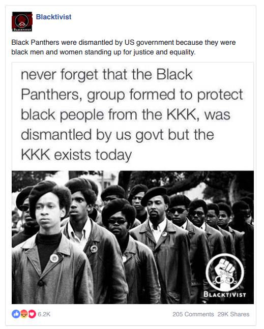

“Fake news” is information that has been deliberately fabricated
and disseminated with the intention to deceive and mislead others
into believing falsehoods or doubting verifiable facts;essentialy it's
disinformation that is presented as, or is likely to be perceived
as, news.
Why is it so bad?
Well first of all, problems arising from the absence of
clear definitions is that national laws criminalizing “fake” or “false”
news are susceptible to misuse and abuse through arbitrary
interpretation and enforcement. Free speech NGOs like ARTICLE 19 report
that such laws are often used by governments across the world to
stifle independent and critical media, thereby creating a chilling
effect on freedom of expression and public debate.
So is it a new problem we just have to deal with?
"Fake news" is by no means a modern phenomenon, for all the current
hysteria around the word. It's as ancient as the forest. Biased
opinions and, on occasion, reports that lack factual grounding
have often been peddled by the press, especially the partisan press.
The issue was framed in terms of the danger posed by the systematic
circulation of intentionally inaccurate or distorted reports to
friendly relations between peoples and states. This boiled down
basically to State-sponsored propaganda, disseminated by (puppet)
news agencies.
There are various ways, which can include all of these, and some examples to help you out.
Judge for your self
If it triggers vast emotions, think before you share it, examples including the Qanon conspiracy, and #saveourchildren.
Question divisive content, ex, Russia meddling in US information, where the Russian trolls, were creating content such as memes that would divide groups amongst each other on fragile issues

Watch out for these!
Beware of posts that show extreme points of view and interrogate everything and its source.
Beware of satirical sources & other sources, which aren’t reliable: The Onion, Babylon Bee
People are out to get you, know it!
Facebook even had a mass spread of a news site heavily influencing left leaning citizens controlled by the Russians which even hired real U.S. Journalists, always check!
Beware of Dirty tricks, consider the motives of a post, such as the false claims for Voter Fraud shown by specific individuals.